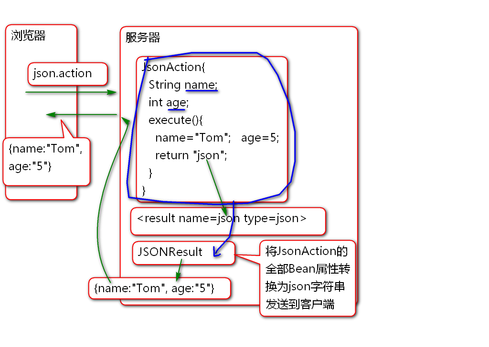
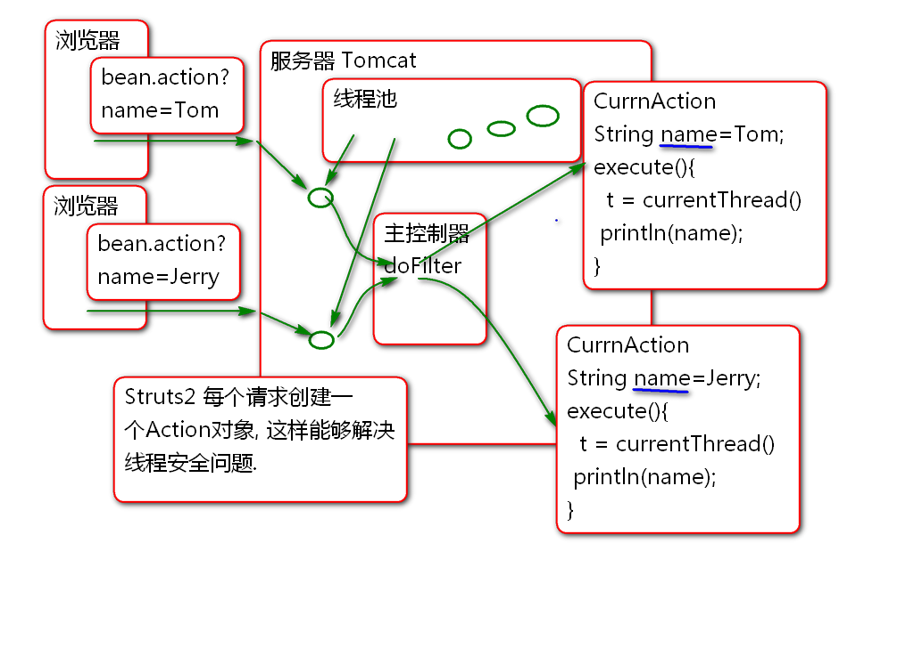
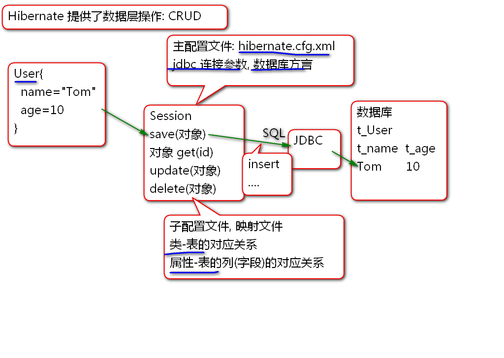

Stream Result 不仅可以处理 图片, 它还可以处理任何类型的文件, 比如处理Excel文件.
案例:
导入Excel API: Apache POI
<dependency>
<groupId>org.apache.poi</groupId>
<artifactId>poi</artifactId>
<version>3.9</version>
</dependency>
编写控制器
public class ExcelAction {
private InputStream excel;
public InputStream getExcel() {
return excel;
}
public void setExcel(InputStream excel) {
this.excel = excel;
}
public String execute(){
try {
byte[] data = createExcel();
excel=new ByteArrayInputStream(data);
return "exl";
} catch (IOException e) {
e.printStackTrace();
return "error";
}
}
public byte[] createExcel() throws IOException{
// Apache poi
// 工作簿 >工作表>行>格子
//workbook> sheet>row>cell
//创建工作簿
HSSFWorkbook workbook=
new HSSFWorkbook();
//在工作簿中创建工作表
HSSFSheet sheet =
workbook.createSheet("演示");
//工作表里创建数据行
HSSFRow row = sheet.createRow(0);
//在行中创建格子
HSSFCell c1 = row.createCell(0);
//在格子中添加内容
c1.setCellValue("编号");
row.createCell(1).setCellValue("内容");
//再添加一行
row = sheet.createRow(1);
row.createCell(0).setCellValue("1");
row.createCell(1)
.setCellValue("Hello World!");
//将excel对象转换为数据
ByteArrayOutputStream out=
new ByteArrayOutputStream();
workbook.write(out);
out.close();
byte[] data = out.toByteArray();
return data;
}
}
配置: struts.xml
<action name="excel"
class="cn.tedu.action.ExcelAction">
<result name="exl" type="stream">
<param name="inputName">excel</param>
<param name="contentType">
application/vnd.ms-excel
</param>
<param name="contentDisposition">
attachment;filename="hello.xls"
</param>
</result>
<result name="error">
/WEB-INF/jsp/error.jsp
</result>
</action>
其中 contentDisposition 属性用于指定下载文件名
测试...
Struts2 利用插件支持了 Json Result
<dependency>
<groupId>org.apache.struts</groupId>
<artifactId>struts2-json-plugin</artifactId>
<version>2.5.12</version>
</dependency>
在插件中包含文件 struts-plugin.xml
<package name="json-default" extends="struts-default">
<result-types>
<result-type name="json" class="org.apache.struts2.json.JSONResult"/>
<result-type name="jsonActionRedirect" class="org.apache.struts2.json.JSONActionRedirectResult"/>
</result-types>
...
在这个文件可以看出: json-default 命名空间扩展了 struts-default 命名空间, 扩展出新的结果类型 json. 只需要继承 json-default 就可以同时使用 json-default 和 struts-default中全部的结果类型了.
默认情况下json类型结果: 将控制器的全部属性序列化为JSON字符串发送到客户端.
原理

案例:
编写控制器
public class JsonAction {
private String name;
private int age;
public String getName() {
return name;
}
public void setName(String name) {
this.name = name;
}
public int getAge() {
return age;
}
public void setAge(int age) {
this.age = age;
}
public String execute(){
name = "Tom";
age = 5;
return "json";
}
}
配置:
<!-- 继承json-default才能使用json类型的
Result -->
<package name="test" namespace="/test" extends="json-default">
<!-- 默认情况下json Result将控制器
的全部Bean属性序列化为JSON字符串发送
到客户端 -->
<action name="json" class="cn.tedu.action.JsonAction">
<result name="json" type="json"/>
</action>
</package>
测试
利用Spring作为工厂管理 Struts2 的控制器, 可以利用Spring为控制器注入业务层组件, 解决控制器依赖业务层组件问题:
步骤:
添加 Spring插件:
<!-- 引入Spring, 将控制器对象的控制权
交给Spring(IOC), 由Spring负责创建控制器
对象,为控制器对象注入属性(业务层对象) -->
<dependency>
<groupId>org.apache.struts</groupId>
<artifactId>struts2-spring-plugin</artifactId>
<version>2.5.12</version>
</dependency>
添加Spring配置文件: spring-struts.xml
<?xml version="1.0" encoding="UTF-8"?>
<beans default-lazy-init="true"
xmlns="http://www.springframework.org/schema/beans"
xmlns:p="http://www.springframework.org/schema/p"
xmlns:xsi="http://www.w3.org/2001/XMLSchema-instance"
xmlns:context="http://www.springframework.org/schema/context"
xmlns:tx="http://www.springframework.org/schema/tx"
xmlns:mvc="http://www.springframework.org/schema/mvc"
xsi:schemaLocation="
http://www.springframework.org/schema/beans
http://www.springframework.org/schema/beans/spring-beans-4.1.xsd
http://www.springframework.org/schema/mvc
http://www.springframework.org/schema/mvc/spring-mvc-4.1.xsd
http://www.springframework.org/schema/tx
http://www.springframework.org/schema/tx/spring-tx-4.1.xsd
http://www.springframework.org/schema/context
http://www.springframework.org/schema/context/spring-context-4.1.xsd" >
<context:component-scan
base-package="cn.tedu.action"/>
</beans>
注意: 配置文件的版本要与插件Spring的版本一致.
编写控制器, 由Spring管理:
@Controller// Bean ID: beanAction
@Scope("prototype")
public class BeanAction {
public String execute(){
Thread t=Thread.currentThread();
System.out.println(t);
System.out.println("Hello World!");
return "success";
}
}
为了解决线程安全问题使用@Scope("prototype")
配置struts.xml
<!-- 使用Spring管理控制器Bean -->
<action name="bean" class="beanAction">
<result name="success">
/WEB-INF/jsp/demo.jsp
</result>
</action>
注意: 当class="beanAction"时候使用Spring Bean ID 时候, 就表示利用SPring管理控制器对象.
测试...
Struts2 默认情况下, 为每个用户线程创建独立的Action对象, 所以Struts2 控制器是线程安全的.
当使用Spring管理Struts2 控制器时候需要使用 @Scope("prototype") 为每个请求单独创建Action对象, 这样才能解决线程安全问题.
原理:

案例:
编写控制器类:
@Controller
@Scope("prototype")
public class CurrnAction {
String name;
public String getName() {
return name;
}
public void setName(String name) {
this.name = name;
}
public String execute() throws Exception{
Thread t = Thread.currentThread();
Thread.sleep(10000);
System.out.println(t);
System.out.println(name);
return "success";
}
}
配置: struts.xml
<action name="currn"
class="currnAction">
<result name="success">
/WEB-INF/jsp/demo.jsp
</result>
</action>
测试
当去掉 @Scope("prototype") 时候会出现线程并发安全问题.
Struts 架子 Hibernate 冬眠 Spring 春天
Hibernate
Hibernate的理想是一切面向对象但是:

导入 Hibernate 和 数据库驱动:
<dependency>
<groupId>org.hibernate</groupId>
<artifactId>hibernate-core</artifactId>
<version>4.3.9.Final</version>
</dependency>
<!-- 添加mysql驱动 (不要选5.1.6) -->
<dependency>
<groupId>mysql</groupId>
<artifactId>mysql-connector-java</artifactId>
<version>5.1.40</version>
</dependency>
配置Hibernate主配置文件: hibernate.cfg.xml
<?xml version="1.0" encoding="UTF-8"?>
<!DOCTYPE hibernate-configuration PUBLIC
"-//Hibernate/Hibernate Configuration DTD 3.0//EN"
"http://www.hibernate.org/dtd/hibernate-configuration-3.0.dtd">
<hibernate-configuration>
<session-factory>
<property name="connection.driver_class">
com.mysql.jdbc.Driver
</property>
<property name="connection.url">
jdbc:mysql://localhost:3306/ssh
</property>
<property name="connection.username">
root
</property>
<property name="connection.password">
root
</property>
<!-- 方言: Hibernate利用方言生成不同数据
的SQL语句. -->
<property name="dialect">
org.hibernate.dialect.MySQL5Dialect
</property>
<!-- 在控制台输出生成的SQL语句 -->
<property name="show_sql">true</property>
<property name="format_sql">true</property>
<!-- 指定子配置文件的位置 -->
<mapping resource="mapping/User.hbm.xml"/>
</session-factory>
</hibernate-configuration>
编写 SQL脚本, 创建表
create table t_user(
t_id int,
t_name varchar(100),
t_age int,
t_address varchar(200),
primary key(t_id)
)
创建实体类:
public class User implements Serializable {
private static final long serialVersionUID = -1655083559936102631L;
private Integer id;
private String name;
private Integer age;
private String address;
public User() {
}
public User(Integer id, String name, Integer age, String address) {
super();
this.id = id;
this.name = name;
this.age = age;
this.address = address;
}
public Integer getId() {
return id;
}
public void setId(Integer id) {
this.id = id;
}
public String getName() {
return name;
}
public void setName(String name) {
this.name = name;
}
public Integer getAge() {
return age;
}
public void setAge(Integer age) {
this.age = age;
}
public String getAddress() {
return address;
}
public void setAddress(String address) {
this.address = address;
}
@Override
public int hashCode() {
final int prime = 31;
int result = 1;
result = prime * result + ((id == null) ? 0 : id.hashCode());
return result;
}
@Override
public boolean equals(Object obj) {
if (this == obj)
return true;
if (obj == null)
return false;
if (getClass() != obj.getClass())
return false;
User other = (User) obj;
if (id == null) {
if (other.id != null)
return false;
} else if (!id.equals(other.id))
return false;
return true;
}
@Override
public String toString() {
return "User [id=" + id + ", name=" + name + ", age=" + age + ", address=" + address + "]";
}
}
创建子配置文件 User.hbm.xml
<?xml version="1.0" encoding="UTF-8"?>
<!DOCTYPE hibernate-mapping PUBLIC
"-//Hibernate/Hibernate Mapping DTD 3.0//EN"
"http://www.hibernate.org/dtd/hibernate-mapping-3.0.dtd">
<hibernate-mapping>
<!-- User 类与 t_user 对应 -->
<class name="cn.tedu.entity.User"
table="t_user">
<!-- User的ID属性对应表的t_id列 -->
<id type="int" name="id" column="t_id"></id>
<!-- 映射普通属性 -->
<property name="name" column="t_name"/>
<property name="age" column="t_age"/>
<property name="address"
column="t_address"/>
</class>
</hibernate-mapping>
测试
public class HbmTestCase {
SessionFactory factory;
Session session;
@Before
public void init(){
Configuration cfg=new Configuration();
//加载主配置文件
cfg.configure("hibernate.cfg.xml");
//创建工厂对象
factory = cfg.buildSessionFactory();
//创建Session对象
session = factory.openSession();
}
@After
public void destory(){
//Session 使用以后务必关闭
session.close();
factory.close();
}
@Test
public void testSave(){
Transaction tx =
session.beginTransaction();
User user = new User(
1, "Tom", 5, "北京");
session.save(user);
tx.commit();
}
}